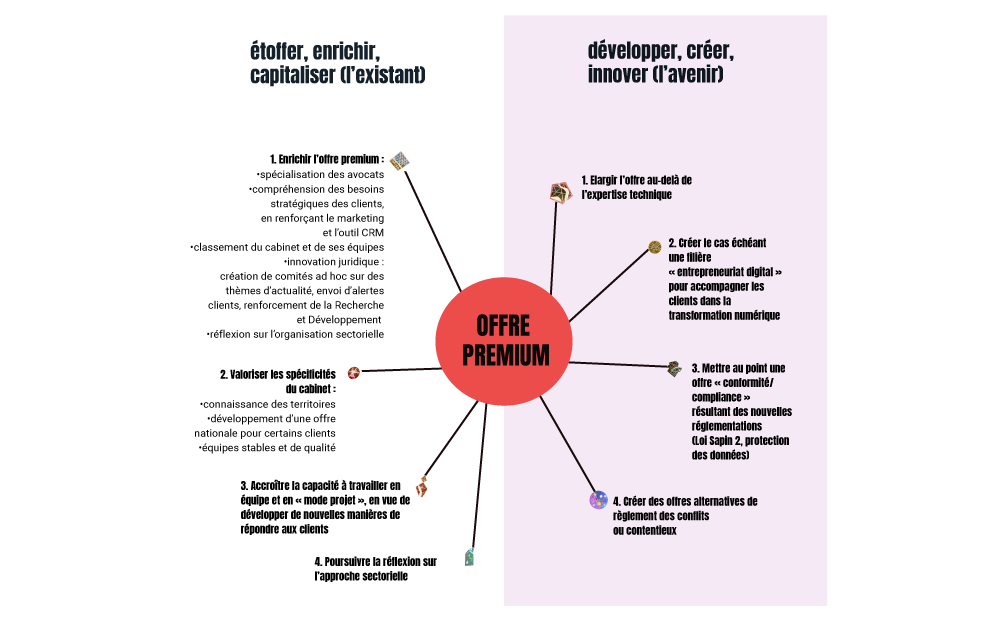
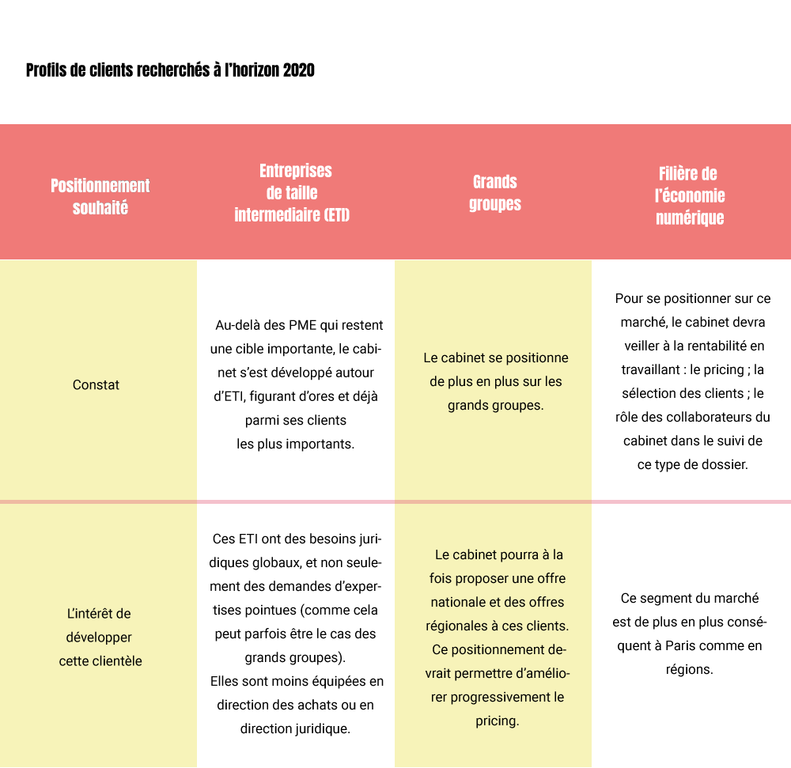

1. Prendre en compte les bouleversements du marché
L’environnement de travail du cabinet Cornet Vincent Ségurel s’annonce de plus en plus mouvant, tant sur les plans réglementaires, technologiques, économiques, que sociaux. Les modalités d’exercice du métier d’avocat seront en effet bouleversées par la libéralisation du marché juridique, et ce dans un contexte de crise économique. Ainsi, à la faveur de l’ouverture de la profession notariale, plus d’un millier d’offices devraient être créés d’ici à 2018 sur le territoire français. A la stricte libéralisation du secteur juridique, s’ajouteront la libéralisation du marché de la publicité, la modernisation des structures juridiques et l’ouverture à l’interprofessionnalité. La banalisation des outils digitaux et le déploiement de l’intelligence artificielle devraient aussi faire largement évoluer le métier : standardisation de certaines tâches, développement d’outils de justice prédictive, etc. La profession aura également à charge d’élaborer une offre de service à destination d’une clientèle plus exigeante - notamment du point de vue des délais -, probablement moins fidèle, et disposant de ressources financières moindres. En outre, la concurrence accrue entre avocats sera renforcée par une plus forte structuration d’autres corps professionnels (experts-comptables, notaires, activités de conseil des banques et assurances, etc.) ou par les start-up de l’économie numérique. Face à de telles évolutions, le cabinet devra s’attacher à rester prioritairement positionné sur le marché de la valeur ajoutée ; saisir les opportunités résultant de la transformation numérique ; s’ouvrir à l’international ; innover pour trouver les moyens de se différencier et créer des nouveaux territoires de croissance.
2. Ce qui nous définira en 2020
En 2020, suivant la feuille de route, Cornet Vincent Ségurel devrait être défini comme :
- un cabinet d’avocats national de référence, capable de répondre, dans les grandes métropoles régionales et à Paris, aux besoins d’une clientèle diverse (grands groupes, ETI et PME innovantes) et ouverte à l’international
- une alternative aux grands cabinets français et étrangers, ainsi qu’aux équipes spécialisées ou aux Big 4, sur les dossiers à forte valeur ajoutée
- un des premiers cabinets indépendants français, en termes d’effectifs d’avocats
- parmi les cabinets les plus innovants, notamment vis-à-vis de la transformation numérique
- toujours aussi attractif sur le plan de son organisation et de son management, en alliant qualité des relations humaines et performance.
3. Enrichir notre offre de services
3.1 Muscler l’offre Premium
3.2. Proposer des services connexes à l’offre traditionnelle
Des formations à destination des clients : tel serait un service connexe que Cornet Vincent Ségurel pourrait délivrer de façon régulière et plus organisée, de manière à renforcer l’image d’un cabinet proposant des services à valeur ajoutée. La conformité ou la gestion de crise pourraient faire l’objet d’une telle offre de services connexes.
3.3. Faciliter la délivrance de services standardisés, par une plateforme Tech et Digital
Favoriser l’interaction avec les clients et mieux les fidéliser, voilà l’objet de la plate-forme Tech et Digital que la feuille de route invite à développer (par le cabinet ou l’une de ses filiales). Proposant des services en ligne et des outils d’interaction à moindre coût, cette plateforme devrait assurer aux clients, comme aux avocats, un accès plus facile à l’information tout en accélérant la délivrance de services standardisés, notamment dans les domaines des droits du travail, fiscal, de la propriété intellectuelle et des sociétés. Ainsi, cette plateforme permettrait d’assurer la rentabilité du cabinet sans dévaluer l’image de l’offre Premium.
Dans cette même optique, la délivrance de certains services standardisés par des partenaires, des sous-traitants, voire via la participation du cabinet à des start-up ou des joint-ventures, représente une possibilité qu’il convient d’étudier.
4. Elargir la palette de clients
Alors qu’il y a 10 ans, Cornet Vincent Ségurel était principalement au service des PME, les associés ont depuis diversifié la clientèle. Cela doit être poursuivi.
